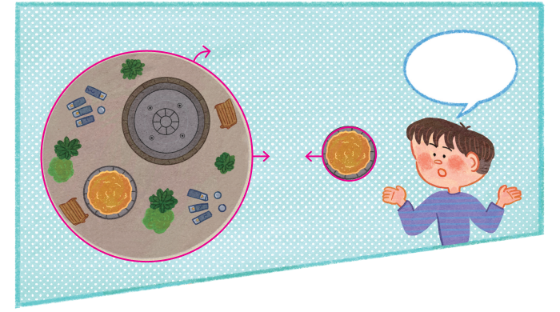
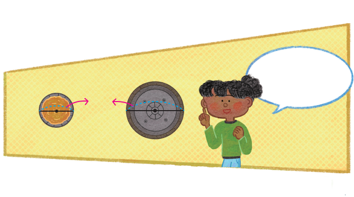

원기둥과 각기둥의 다른 점을 생각해 보세요.
- 밑면은 원이고 각기둥의 밑면은 다각형입니다.
- 옆면이 굽은 면이고, 각기둥은 옆면이 평평한 면입니다.
모래 놀이터의 원주와 지름은 각각 몇 m인지 구해 보세요.

- 모래 놀이터의 원주는 18.84 m입니다.
- 모래 놀이터의 지름은 6 m입니다.
주변에서 볼 수 있는 기둥은 어떤 모양이 많은지 조사해 보세요.
- 각기둥 모양은 건물 기둥 등에서 볼 수 있습니다.
- 원기둥 모양은 전봇대, 가로등, 건물 기둥 등에서 볼 수 있습니다.
가로등을 어떤 모양으로 만들지 정하고, 그 이유를 이야기해 보세요.
원기둥 모양이 좋을 것 같습니다. 원기둥 모양을 사용하면 비용을 절약할 수 있고, 센 바람이 불 때에도 각기둥 모양보다 쉽게 부러지지 않을 것 같기 때문입니다.
=======바닥 분수의 지름은 몇 m인지 구해 보세요.

바닥 분수의 지름은 10 m입니다.